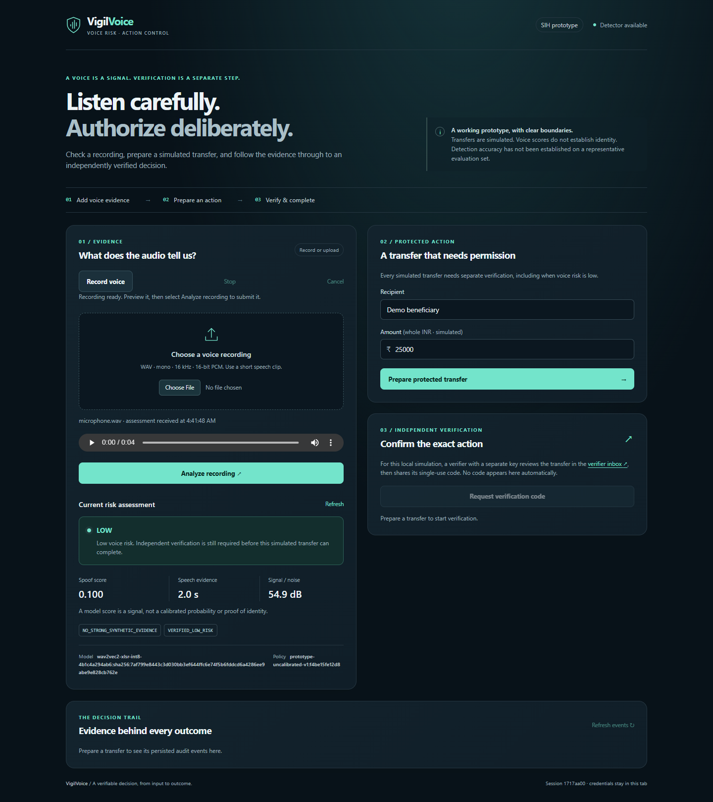

VigilVoice · Prototype handbook
A practical guide to the voice-risk detector, protected-action workflow, local setup, classroom demonstration, tests, and current limitations.
Prepared for understanding and presenting the SIH prototype · 12 September 2026
Quick orientation
VigilVoice checks a voice recording for usable speech and synthetic-speech signals before a sensitive action is allowed to continue. The voice result never approves a transfer by itself. A separate verifier must review the exact recipient and amount and provide a one-time code.
Architecture
Native HTML, CSS and JavaScript. It accepts an existing WAV or records up to 10 seconds from the microphone, converts it to 16 kHz mono PCM WAV, previews it, and submits it only after the user clicks Analyze.
Creates private sessions, validates input, runs audio inference away from the event loop, applies the policy, owns actions and exposes the verifier/audit endpoints.
Silero finds speech and supports duration/quality evidence. Wav2Vec2 outputs a synthetic-speech score. Smoothing slows recovery while a high raw score escalates immediately.
LOW or ELEVATED evidence may request verification. HIGH, poor, insufficient, stale, invalid or unavailable evidence prevents completion.
Stores sessions, risk evaluations, immutable action details, verification challenges, hashed approval tokens and chronological audit events.
A separate page requires a verifier key and shows the exact recipient, amount and single-use code. It demonstrates the intended boundary but is not real independent delivery.
| Area | Files |
|---|---|
| Audio inference | app/services/audio_pipeline.py, vad_worker.py, spoof_detector.py |
| Protected actions | app/api/v1/actions.py, app/services/action_gate.py |
| Browser UI | app/static/index.html, app.js, microphone.js |
| Database | init.sql, config/migrations/001_protected_actions.sql |
Decision logic
| State | Meaning | Action behavior |
|---|---|---|
| LOW | No strong synthetic signal under current settings | Can request separate verification |
| ELEVATED | Some spoof signal detected | Can request verification with a warning |
| HIGH | Strong spoof signal | Transfer is blocked |
| POOR QUALITY | Clipped, quiet or degraded audio | Ask for better evidence; block |
| INSUFFICIENT | Too little usable speech | Ask for longer speech; block |
| UNAVAILABLE | Missing/stale evidence or model failure | Fail closed; block |
Launch guide
Approximately 358 MB. Existing correct files are checksum-verified and reused.
This creates the ignored .env file without printing secrets.
You should see vigilvoice_backend, a healthy vigilvoice_db, and a health response with "status":"ok".
Using the app
http://127.0.0.1:8000/
Record/upload audio, inspect the risk, prepare the simulated transfer, enter a code and review the audit.
http://127.0.0.1:8000/verify
Enter the private verifier key and action ID, review the exact details, then share the one-time code.

Actual browser screenshot from the verified local build. The dashboard intentionally shows the model and policy profile and states that the score is not proof of identity.
Demonstration
After requesting a code, run:
This avoids displaying the long verifier key. It still represents simulated local delivery.
Evidence
Session isolation, missing/stale evidence, action-bound OTP and approvals, expiry, three-attempt lockout, concurrent single-use completion, malformed/oversized/silent/clipped audio, synthetic replacement, disconnect invalidation and unavailable models.
Native fake-microphone recording, WAV conversion, CSP-safe preview, authenticated upload to the real backend, no JavaScript exception, and no horizontal overflow at 390 px.
✓ Python: 12 passed, 1 optional model smoke skipped in the normal suite.
✓ UI and microphone Node smoke checks passed.
✓ Ruflo deep security scan: no findings.
✓ Models available with verified SHA256 digests.
| Running default HIGH 0.75 | Result |
|---|---|
| Synthetic clips eligible for OTP | 1 / 9 scorable (11.1%) |
| Genuine clips falsely blocked as HIGH | 1 / 9 scorable (11.1%) |
| Quality rejections | 2 / 20 total |
| Service unavailable | 0 / 20 |
An offline candidate threshold of 0.58 blocked all 9 scorable synthetic test clips but falsely blocked 3 of 9 scorable genuine clips. It was not deployed. This demonstrates the security/usability tradeoff.
Troubleshooting
| Problem | Check or fix |
|---|---|
| Docker command fails | Open Docker Desktop, wait for it to finish starting, then rerun docker compose up -d --build. |
| Models unavailable | Run python scripts/fetch_models.py --samples, then restart the backend. |
| Port 8000 unavailable | Check docker compose ps. Stop another local service using the port or stop the old VigilVoice stack. |
| Backend exits | Read recent logs with docker compose logs --tail 100 backend. |
| Database is unhealthy | Read docker compose logs --tail 100 db. Do not delete its volume while preserving data matters. |
| Microphone button disabled | Use Chrome/Edge on localhost, allow microphone permission, or use a bundled WAV. |
| Audio rejected | Use 16 kHz mono 16-bit PCM WAV. Record clear uninterrupted speech or use the known demo files. |
| Evidence/code expired | Analyze again and create a new transfer. Expired or locked challenges cannot be reset. |
This stops the containers and preserves PostgreSQL data in its Docker volume. The current application is local-only and binds its ports to 127.0.0.1.
Current status
Yes, for a supervised classroom or judging demonstration. It has a complete input-to-decision flow, real inference, failure handling, verification, audit evidence, reproducible launch instructions and measured limitations.
Detailed local references: docs/teacher-demo-guide.md, docs/evaluation-report.md, docs/model-setup.md, and docs/teacher-build-receipt.json.